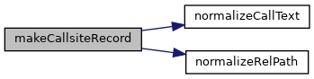
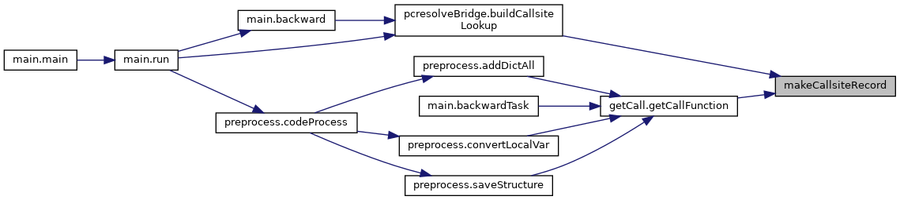
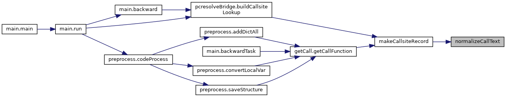
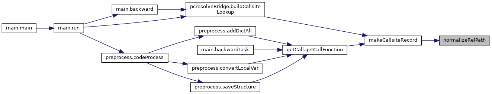

|
PCART
|
Provide structured callsite identity helpers. More...
Classes | |
| class | CallsiteIdentity |
| Callsite identity class 调用点身份类 More... | |
| class | CallsiteRecord |
| Callsite record class 调用点记录类 More... | |
Functions | |
| def | makeCallsiteRecord (file_path, call_text, format_api, parameters, lineno, col_offset, end_lineno=None, end_col_offset=None, proj_path=None) |
| Make callsite record 构造调用点记录 More... | |
| def | normalizeCallText (call_text) |
| Normalize call text for identity generation 归一化调用文本，用于生成调用点身份 More... | |
| def | normalizeRelPath (file_path, proj_path=None) |
| Normalize source file path to project relative path 将源码路径归一化为项目相对路径 More... | |
Provide structured callsite identity helpers.
Defines CallsiteIdentity (structured source-location metadata) and CallsiteRecord (artifact_id + format_api + parameters). The artifactId() method produces a stable, readable SHA256-based key used for pkl naming, manifest tracking, and shared dictionary lookups throughout the pipeline. 定义CallsiteIdentity（结构化源码位置元数据）和CallsiteRecord （artifact_id + format_api + parameters）。artifactId()方法生成稳定可读的 SHA256-based键，用于pkl命名、manifest跟踪和共享字典查找。
| def callsite.makeCallsiteRecord | ( | file_path, | |
| call_text, | |||
| format_api, | |||
| parameters, | |||
| lineno, | |||
| col_offset, | |||
end_lineno = None, |
|||
end_col_offset = None, |
|||
proj_path = None |
|||
| ) |
Make callsite record 构造调用点记录
| file_path | The source file path |
| call_text | The original call text |
| format_api | The restored API for static matching |
| parameters | The parameter string |
| lineno | The line number of callsite |
| col_offset | The column offset of callsite |
| end_lineno | The end line number of callsite |
| end_col_offset | The end column offset of callsite |
| proj_path | The project root path |
Definition at line 180 of file callsite.py.


| def callsite.normalizeCallText | ( | call_text | ) |
Normalize call text for identity generation 归一化调用文本，用于生成调用点身份
| call_text | The original call text |
Definition at line 144 of file callsite.py.

| def callsite.normalizeRelPath | ( | file_path, | |
proj_path = None |
|||
| ) |
Normalize source file path to project relative path 将源码路径归一化为项目相对路径
| file_path | The source file path |
| proj_path | The project root path |
Definition at line 154 of file callsite.py.
